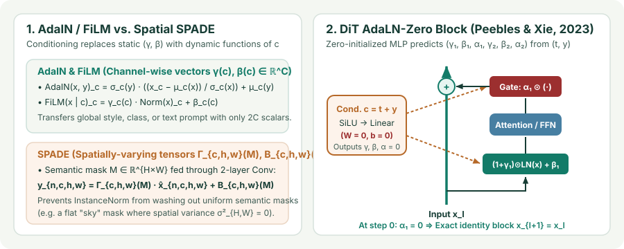

Conditional Normalization: AdaIN, FiLM, Spatially-Adaptive SPADE, and DiT AdaLN-Zero
Replace static affine parameters $(\gamma,\beta)$ with dynamic functions of a conditioning vector $c$: trace AdaIN style transfer and StyleGAN2 weight demodulation, FiLM multimodal gating, spatially varying SPADE, and AdaLN-Zero in Diffusion Transformers (DiT).
In Chapters 02–04, the affine parameters $\gamma,\beta\in\mathbb R^C$ after standardization were static vectors learned once across the entire dataset. What happens if we make $(\gamma(c),\beta(c))$ dynamic functions of an external conditioning signal $c$—such as a painting’s style, a spoken question, a semantic segmentation mask, or a diffusion timestep $t$? Conditional normalization turns every normalization layer into a parameter-efficient steering wheel for the entire network.
1. Conditional BatchNorm and FiLM: steering features with $2C$ scalars
Instead of concatenating a conditioning vector $c\in\mathbb R^{d_c}$ to every spatial pixel $(h,w)$—which inflates convolutional weight matrices—Conditional BatchNorm (Dumoulin et al., 2017; De Vries et al., 2017) and Feature-wise Linear Modulation (FiLM) (Perez et al., 2018) predict per-channel scale and shift vectors via a small linear or MLP projection $(\gamma(c),\beta(c)) = W_c c + b_c \in\mathbb R^{2C}$:
With just $2C$ numbers per layer, FiLM can amplify relevant feature detectors ($\gamma_c > 1$), zero out irrelevant channels ($\gamma_c = 0$), invert contrast ($\gamma_c < 0$), or shift activation thresholds ($\beta_c$) before a ReLU/SiLU nonlinearity.

2. Adaptive Instance Normalization (AdaIN) and StyleGAN2 Weight Demodulation
In arbitrary style transfer, Adaptive Instance Normalization (AdaIN) (Huang & Belongie, 2017) takes a content feature map $x\in\mathbb R^{C\times H\times W}$ and a style feature map $y\in\mathbb R^{C\times H'\times W'}$, removes the content’s per-channel spatial mean and standard deviation $(\mu_c(x),\sigma_c(x))$, and replaces them directly with the style’s spatial moments $(\mu_c(y),\sigma_c(y))$:
In StyleGAN (Karras et al., 2019), a mapping network maps a latent code $z\mapsto w\in\mathcal W$, and an affine layer predicts style scales $s_i = A_i w$ for AdaIN at every resolution. However, Karras et al. (2020) discovered in StyleGAN2 that applying InstanceNorm directly to feature maps creates bright “water droplet” artifacts: the generator learns to sneak signal past InstanceNorm by creating an extreme localized spike at one pixel that dominates $\sigma_c(x) = \sqrt{\frac{1}{HW}\sum_{h,w}(x_{c,h,w}-\mu_c)^2}$. StyleGAN2 eliminates the runtime InstanceNorm denominator by moving modulation and normalization onto the convolutional weights $W_{j,i,k}$ (output channel $j$, input channel $i$, spatial tap $k$):
Under the assumption that input channels have unit variance, $\hat W_{j,:,:}$ guarantees that output channel $j$ also has unit expected variance—without ever dividing activations by a data-dependent spatial standard deviation!
3. Spatially-Adaptive Normalization (SPADE): why flat normalization washes out masks
Suppose you want to synthesize a photorealistic landscape from a semantic segmentation mask $M\in\{1,\dots,K\}^{H\times W}$ where the entire top half of the image has the constant label `sky`. If you feed $M$ into a convolutional layer and apply InstanceNorm, what happens?
- Inside the uniform `sky` region, every pixel has the exact same convolution response $x_{c,h,w} = a_c$. Subtracting the spatial mean $\mu_c = a_c$ yields $x_{c,h,w} - \mu_c = 0$ everywhere—washing away the semantic label completely!
SPADE (Park et al., 2019) solves this by normalizing the activation map $x$ parameter-free (via BatchNorm or InstanceNorm) and then injecting the segmentation mask $M$ through a two-layer convolutional head that outputs spatially varying 3D modulation tensors $\Gamma(M),\text{B}(M)\in\mathbb R^{C\times H\times W}$:
Because $\Gamma_{c,h,w}(M)$ and $\text{B}_{c,h,w}(M)$ vary across $(h,w)$ and are never normalized themselves, uniform semantic regions retain their full class identity at every spatial coordinate.
4. AdaLN-Zero in Diffusion Transformers (DiT, SD3, Flux)
When Peebles and Xie (2023) designed the Diffusion Transformer (DiT), they benchmarked three ways of conditioning a Vision Transformer on the diffusion timestep $t$ and class/text vector $y$: in-context token appending, cross-attention blocks, and Adaptive LayerNorm (AdaLN-Zero). AdaLN-Zero achieved the lowest FID across all model scales while adding almost zero FLOPs to the sequence pass.
In each DiT block, a single conditioning MLP takes $c = t_{\text{emb}} + y_{\text{emb}}\in\mathbb R^D$ and regresses six vectors $(\gamma_1,\beta_1,\alpha_1,\gamma_2,\beta_2,\alpha_2)\in\mathbb R^{6D}$—scale $\gamma$, shift $\beta$, and a post-branch residual gate $\alpha$ for both the Attention and FFN sublayers:
where $\operatorname{LN}(\cdot)$ is a parameter-free LayerNorm (`elementwise_affine=False`). Crucially, AdaLN-Zero initializes the final linear layer of the conditioning MLP to all zeros ($W_{\text{cond}}=0,b_{\text{cond}}=0$):
- At step $0$, $\gamma_k(c) = \mathbf{0}$, $\beta_k(c) = \mathbf{0}$, and $\alpha_k(c) = \mathbf{0}$, so every DiT block starts as an exact identity function ($x_{l+1} = x_l$), stabilizing arbitrarily deep Diffusion Transformers from the very first gradient step.
import torch
import torch.nn as nn
class DiTBlockAdaLNZero(nn.Module):
def __init__(self, d_model: int, n_heads: int):
super().__init__()
self.norm1 = nn.LayerNorm(d_model, elementwise_affine=False, eps=1e-6)
self.attn = nn.MultiheadAttention(d_model, n_heads, batch_first=True)
self.norm2 = nn.LayerNorm(d_model, elementwise_affine=False, eps=1e-6)
self.mlp = nn.Sequential(nn.Linear(d_model, 4 * d_model), nn.GELU(), nn.Linear(4 * d_model, d_model))
self.adaLN_modulation = nn.Sequential(nn.SiLU(), nn.Linear(d_model, 6 * d_model))
# Zero-initialize the modulation head so gamma=0, beta=0, alpha=0 at step 0
nn.init.zeros_(self.adaLN_modulation[-1].weight)
nn.init.zeros_(self.adaLN_modulation[-1].bias)
def forward(self, x: torch.Tensor, c: torch.Tensor) -> torch.Tensor:
# x: (B, T, D), c: (B, D)
g1, b1, a1, g2, b2, a2 = self.adaLN_modulation(c).unsqueeze(1).chunk(6, dim=-1)
h = self.norm1(x) * (1.0 + g1) + b1
x = x + a1 * self.attn(h, h, h, need_weights=False)[0]
h2 = self.norm2(x) * (1.0 + g2) + b2
x = x + a2 * self.mlp(h2)
return x5. Questions worth answering
Because the conditional modulation $(1+\gamma(c))\odot\operatorname{LN}(x) + \beta(c)$ already supplies the scale and shift! Keeping a separate static affine pair $(\gamma_{\text{static}},\beta_{\text{static}})$ inside `LayerNorm` would be redundant over-parameterization.
Check the product rule on $y = \alpha_1(c)\odot\operatorname{Attn}(\tilde x)$: while the gradient flowing into $\operatorname{Attn}$ is initially scaled by $\alpha_1 = 0$ on step $1$, the gradient with respect to the gate $\alpha_1$ itself is $\frac{\partial\mathcal L}{\partial\alpha_1} = \nabla_y\mathcal L \odot \operatorname{Attn}(\tilde x) \ne 0$ because $\operatorname{Attn}$ has random weights! Thus $\alpha_1(c)$ becomes nonzero after the very first optimizer step, immediately opening the gradient valve into $\operatorname{Attn}$ on step $2$.
Sources
Huang and Belongie, Arbitrary Style Transfer in Real-time with Adaptive Instance Normalization (ICCV 2017); Perez et al., FiLM: Visual Reasoning with a General Conditioning Layer (AAAI 2018); Park et al., Semantic Image Synthesis with Spatially-Adaptive Normalization (CVPR 2019); Peebles and Xie, Scalable Diffusion Models with Transformers (ICCV 2023).